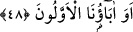

<a name=9179></a><br/>
<br/>
<br/>
<b>48. Önceki atalarımız da mı?<br/></b>Âyet-i kerîmenin başındaki <i>vav</i> harfi, bu âyet-i kerîmeyi önceki âyet-i kerîmedeki<br/>
mânâya atıf içindir. Mânâ: “Acaba bizden önce ölen anne ve babalarımız da ba’s olurlar<br/>mı?” şeklindedir.<br/>
<a href="RuhulBeyans.html#9178">[217].</a> Aclûnî, I, 412.<br/>
